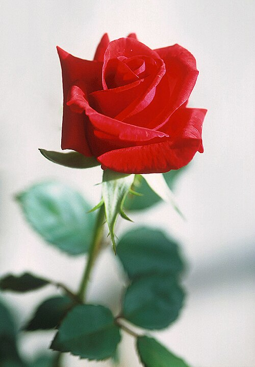

Welcome to Spring Gardens, the four-acre demonstration garden tended by Maria Alvarez. This leaflet links to everything you need to plan your visit.
See the 2026 garden plan for the bed layout, the varieties table for a quick bloom-time reference, and the catalog for botanical names. The full care guide is also published here.

Maria Alvarez, head gardener — Spring Gardens, 2026.